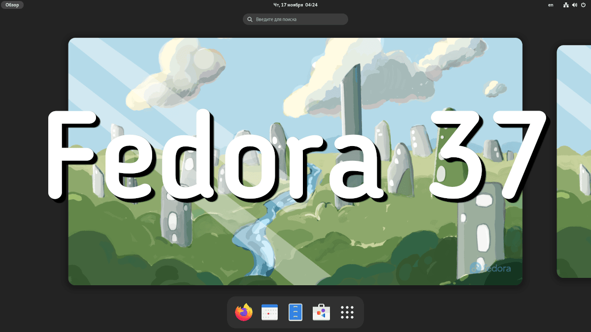
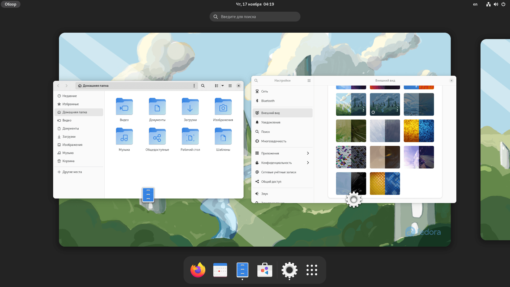

Fedora 37
Хвилинка історії:
Fedora - дистрибутив Linux, що розробляється проектом Fedora Project (проект спонсорується компанією Red Hat). Включає редакції для використання на персональних комп'ютерах, серверах, у хмарі та IoT. За умовчанням використовує середовище робочого столу GNOME. Різні графічні середовища доступні в офіційних редакціях Fedora Spins.

Версія: 37
Дата релізу: 15 листопада 2022
Попередній реліз: 36 від 6 травня 2022 (прес-реліз)
Gnome 43
Виконаний перехід на нову версію GNOME 43. Деякими нововеденнями є:
- Нова вкладка Device Security у системних налаштуваннях.
- Переклад більшості додатків на GTK та бібліотеку libadwaita.
- Оновлене системне меню.
- Різні покращення та оновлення інтерфейсу Файлового менеджера.
- А також інше...

Також вам може бути цікаво:
- Використовується ядро Linux6.0.
- Реалізовано підтримку одноплатного комп'ютера Raspberry Pi 4, включаючи апаратне прискорення графіки.
- Припинено підтримку архітектури ARMv7 (arm32/armhfp).
- Для редакції Fedora Server тепер доступний KVM-образ, який можна використовувати для запуску під віртуальною машиною.
- Для систем x86 BIOS тепер замість MBR-розмітки використовується GPT-розмітка.